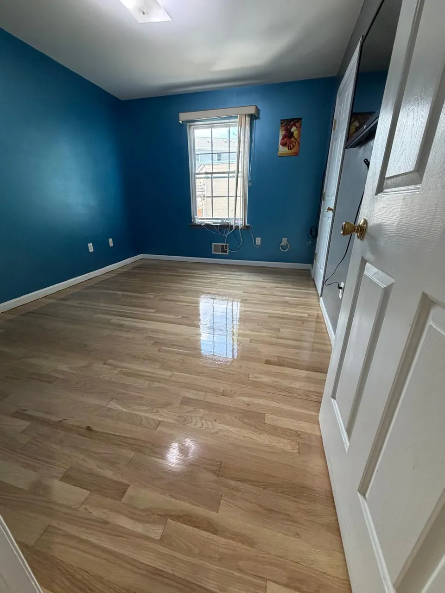
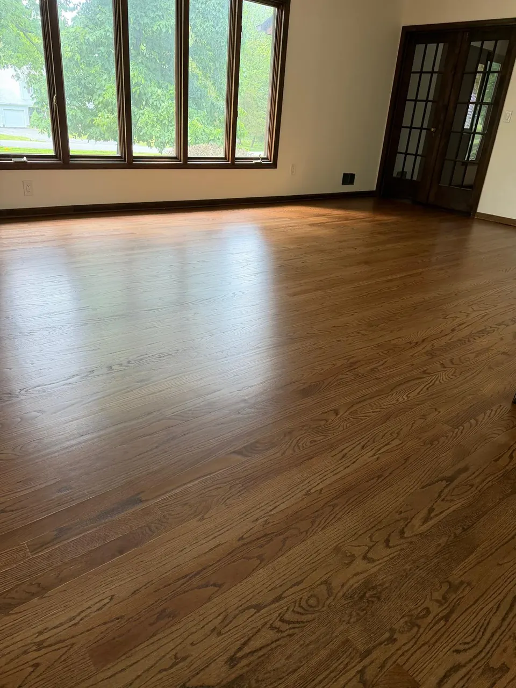

In this article
Quick answer
The primary benefits of ditching carpet for hardwood include an immediate improvement in indoor air quality, significantly easier daily maintenance, and a direct increase in your property's resale value. Hardwood floors eliminate the trapped dust and pet dander found in carpets, and they last for decades with proper care.
The bottom line
Many homeowners hold onto old carpets thinking they bring warmth and comfort, only to spend hours dealing with endless vacuuming, trapped allergens, and stubborn traffic wear patterns.
The primary benefits of ditching carpet for hardwood include immediate improvement in indoor air quality, significantly easier daily maintenance, and a direct increase in your property's resale value. Hardwood floors eliminate the trapped dust and pet dander found in carpets, allowing for a cleaner, healthier living environment that lasts for decades with proper care.
If you want to stop paying for professional carpet steam cleaning and start enjoying a highly functional, durable home interior, here is the factual breakdown of why hardwood is the superior investment.
Why are New Jersey homeowners making the switch?
Before we get to the specific benefits, let us address the shift in local real estate. In areas like Linden, Westfield, and Summit, NJ, buyers and homeowners are actively moving away from wall-to-wall carpeting. Carpets absorb moisture, trap spills, and hold onto odors. Over time, the padding underneath degrades, leaving you with a floor that feels flat and looks visibly aged.
Hardwood provides a structural upgrade. It is a solid, durable surface that withstands heavy foot traffic, kids, and pets. If you suspect you already have old wood hiding under your current carpet, reading our guide on how hardwood floor refinishing restores old floors is an excellent starting point to understand your options.
The 5 tangible benefits of hardwood over carpet
1. Drastically improved indoor air quality
Carpets act like giant filters, trapping dust mites, pollen, pet hair, and other allergens deep within their fibers. Every time you walk on a carpet, these particles are pushed back into the air. Hardwood floors offer a smooth, non-porous surface. Dust and allergens have nowhere to hide, making hardwood the best flooring choice for families dealing with allergies or asthma.
2. Easier daily cleaning and maintenance
Maintaining carpet requires heavy vacuums, spot treatments for spills, and annual professional deep cleaning. Hardwood maintenance is straightforward and fast. A quick sweep or vacuum with a hard-floor attachment, followed by a damp mop using a specialized wood cleaner, is all it takes to keep the surface pristine.

3. Superior long-term financial value
The average carpet needs to be replaced every 7 to 10 years due to matting and stains. High-quality hardwood floors can last for generations. While the upfront installation cost is higher, you never have to pay for a full replacement. If the wood gets damaged over the years, you can simply sand and refinish it. You can learn more about this process in our article: Can scratched hardwood floors be fixed? Here's what homeowners need to know.
CarpetReplaced every 7 to 10 years
HardwoodSanded and refinished, not replaced
4. Better temperature and climate control
A common question is whether hardwood keeps a house warm. Unlike carpet, which can trap unwanted humidity during heavy New Jersey summers, hardwood adapts well to climate control systems. In the winter, wood retains ambient heat effectively, and it pairs perfectly with area rugs to provide targeted warmth exactly where you need it, without the hygiene issues of a permanent carpet.
5. A modern, high-end aesthetic
Carpet dates a house quickly. Hardwood instantly modernizes a space, making rooms look larger and brighter. It also offers versatility; if you want to change your interior design, hardwood complements almost any furniture style. For a look at what is currently popular in our area, check out the top hardwood flooring trends for Westfield and Summit homes in 2026.

Ready to upgrade your floors in NJ?
Replacing your carpet with hardwood is not just an aesthetic choice; it is a practical decision that improves your daily life. By upgrading to a solid surface, you eliminate trapped allergens, cut your cleaning time in half, and add permanent financial value to your property.
Costa Flooring has over 10 years of experience helping homeowners in Linden, NJ, and surrounding communities make this upgrade. Our licensed and insured team handles everything from carpet removal to flawless hardwood installation. Planning the budget? See what replacing carpet with hardwood costs in NJ, and how long it takes.
Stop fighting with old, worn-out carpets. Call (862) 452-2181 today to schedule a fast estimate and get your project started.